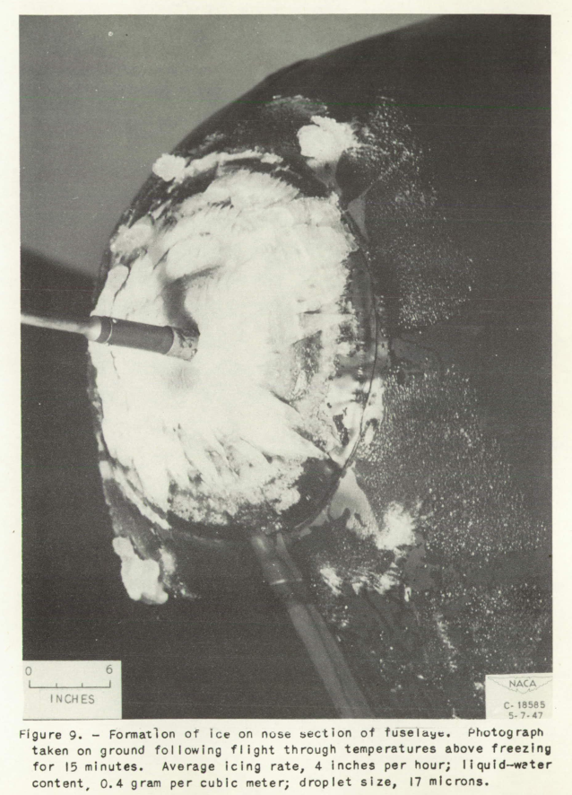

"It is significant that the control response of the airplane approached the point of being marginal when all of the airplane except the propeller had accreted ice"

NACA-TN-1598, "Effects of Ice Formations on Airplane Performance in Level Cruising Flight" 1
Summary
Airplane levels effects of icing are measured, and broken into major components.
Key Points
- Numerous, excellent quality photos show how icing flight test "should be done".
- Airplane levels effects of icing are measured, and broken into major components.
- "It is significant that the control response of the airplane approached the point of being marginal when all of the airplane except the propeller had accreted ice."
Abstract
A flight investigation in natural icing conditions was conducted by the NACA to determine the effect of ice accretion on airplane performance.
The maximum loss in propeller efficiency encountered due to ice formation on the propeller blades was 19 percent. During 87 percent of the propeller icing encounters, losses of 10 percent or less were observed. Ice formations on all of the components of the airplane except the propellers during one icing encounter resulted in an increase in parasite drag of the airplane of 81 percent. The control response of the airplane in this condition was marginal.
Discussion
This publication looks at the airplane level effects of ice, and then it breaks down down to a major component level.
The online version of NACA-TN-1598 has many excellent quality images, several are included here.
Like NACA-TN-313 I found much of my own icing flight test experience was reflected in NACA-TN-1598, published 70+ years ago. I saw similar ice shapes on other airplanes, decades later.
For brevity, I will omit the discussion about propeller icing.
The flight investigation by the Cleveland laboratory was conducted with a twin-engine airplane (fig. 1). This airplane was originally used by the Army Air Forces in the preliminary investigation of propeller icing reported in reference 2. The ice-prevention equipment provided by the manufacturer consists of a thermal heated-air system that protects the outboard wings, the horizontal and vertical tail surfaces, and the windshields. For this investigation, the anti-icing system was augmented by thermal electric anti-icing equipment for the fuselage foresection, the propellers, the inboard wings, the cowling, and the antenna masts. Liquid-water content, droplet size, and droplet-size distribution were determined by means of rotating cylinders. The installation of the rotating cylinders and a disk-type icing-rate meter is shown in figure 2. The principles of operation of these instruments are explained in references 3 and 4. Special research equipment installed in the airplane is listed in table I.
You can see more about the ice protection equipment of the XB-25E "Flamin' Maimie" at https://www.nasa.gov/specials/NACA/#c19. I would fly in icing conditions in this airplane, unlike the VE-7 from NACA-TN-313.
Figure 2 shows a view of the rotating cylinders instrument
(which we have seen much of in the Icing on Cylinders thread), and the rotating disk:

(The line crossing the rotating cylinders is a wire antenna, not an image flaw.)
Component Icing
One flight at Cleveland was made to determine the effect on airplane performance of ice accretions on components of the airplane other than the propeller. The time history of the icing condition shown in figure 6 indicates that the average icing rate was approximately 4 inches per hour and that a maximum icing rate of approximately 12 inches per hour existed for a fraction of a minute. A comparison of the rotating-cylinder data with the icing-rate data for the corresponding period indicated that the average liquid-water content was approximately 0.4 gram per cubic meter with an average droplet diameter of 17 microns. These meteorological conditions are almost equal to the severest conditions that might be encountered in a stratus cloud as determined by reference 7.
Photographs of the resulting ice formations are shown in figures 7 to 13. Front and side views of the ice formation on the loop-antenna housing are shown in figure 7. Equally heavy ice collected on the antenna mast and on instrument-landing-system receiving antennas (fig. 8). Ice on the nose of the airplane was photographed on the ground after 15 minutes of flight in temperatures above freezing (fig. 9). Thin, rough, glaze-ice deposits extended well beyond the principal ice accretion. Several large isolated pieces indicate that the total formation was much larger during the flight. Ice on the leading edge of the engine cowling (fig. 10) was uniform but noticeably smaller than ice formations on the other components of the airplane. The ice formations on the inboard-wing panels were relatively small (fig. 11). The size of the formation can be judged by the 1-inch reference stripes on the wing surface. Some ice was lost from the outboard-wing panels.


The forward radome, appears to have not retained all of the ice on landing: 


De-icing the components in the following order resulted in the corresponding changes in indicated airspeed at 1400 brake horse-power:
Inboard-wing panel, 163 to 166 miles per hour; tail surfaces, 166 to 170 miles per hour; outboard-wing panels, 170 to 182.5 miles per hour; engine cowling, 182.5 to 187 miles per hour; and miscellaneous components, 187 to 204 miles per hour. (See fig. 14.)

These data were interpreted in terms of parasite drag and are shown in figure 15 in percentage of total drag of the ice-free airplane. A drag increase of 8 percent was produced by ice accretion on the inboard-wing panels; empennage, 11 percent; outboard-wing panels, 27 percent; engine cowling, 10 percent; and miscellaneous components, 25 percent. This investigation did not include the determination of such factors as stalling speed, minimum single-engine speed, and low-speed flying qualities. It is significant that the control response of the airplane approached the point of being marginal when all of the airplane except the propeller had accreted ice.

So, even if the drag and level flight lift with icing are tolerable, the control response may not be.
Conclusions
SUMMARY OF RESULTS
From a flight investigation to determine the effect of ice formations on airplane performance in level cruising flight, the following results were obtained:
1. The maximum loss in propeller efficiency due to ice formation on the propeller blades in trace-to-light-icing conditions was 19 percent.
2. During this investigation, 87 percent of the icing encountered resulted in propeller-efficiency losses of 10 percent or less due to ice formation on the propeller blades.
3. Ice formations on all of the components of the airplane, except the propellers during one icing encounter, resulted in an increase in parasite drag of the airplane of 81 percent. The control response of the airplane in this condition was marginal.
4. The maximum propeller unbalance due to ice formations on the propeller blades was 85 ounce-inches.
Citations
NACA-TN-1598 cites 7 publications:
- Corson, Blake W. Jr., and Maynard, Julian D.: The Effect of Simulated Icing or Propeller Performance. NACA-TN-1084, 1946.
- Kanter, M.: Flight Performance on XB-25E Airplane No. 42-32281 In Natural Ice During February, March and April 1945. AAF TR No. 5403, Air Materiel Command, Array Air Forces, Dec. 17, 1945. (Available from Office of Technical Services, U. S. Dept. of Commerce, as PB No. 27065.)
- Clark, Victor F.: The Multicylinder Method. Mt. Wash. Observatory Monthly Res. Bull., vol. II, no. 6, June 1946.
- Vonnegut, B., Cunningham, R. M., and Katz, R. E.: Instruments for Measuring Atmospheric Factors Related to Ice Formation on Airplanes. De-Icing Res. Lab., Dept. Meteorology, M.I.T., April 1946.
- Jones, Alun R., and Spies, Ray J., Jr.: An Investigation of a Thermal Ice-Prevention System for a C-46 Cargo Airplane, III - Description of Thermal Ice-Prevention Equipment for Wings, Empennage, and Windshield. NACA-ARR-5A03b, 1945.
- Reed, Albert C.: Airplane Performance Testing at Altitude. Jour. Aero. Sc., vol. 8; no. 4. Feb. 1941, pp . 135-150.
- Lewis, William: A Flight Investigation of the Meteorological Conditions Conducive to the Formation of Ice on Airplanes. NACA-TN-1393, 1947.
NACA-TN-1598 is cited once in the NACA Icing Publications Database2
- Neel, Carr B., Jr., and Bright, Loren G.: The Effect of Ice Formations on Propeller Performance. NACA-TN-2212, 1950.
An online search 3 found 23 citations of NACA-TN-1598.